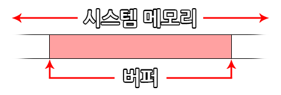
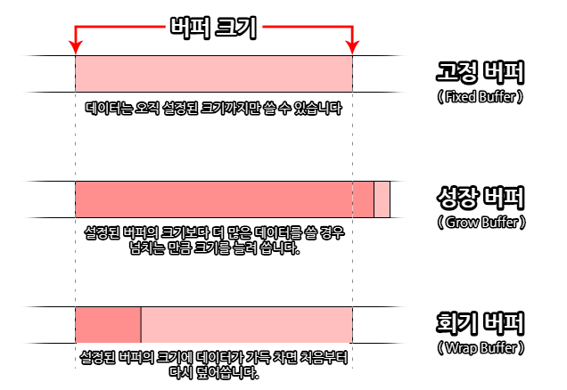
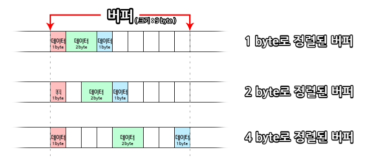

GameMaker Studio 2는 GML에서 버퍼*를 처리하는 일련의 기능을 가지고
있습니다. 대부분의 사람들은 이 용어가 컴퓨터와 프로그래밍을 다룰 때 항상 사용되기
때문에 이 용어에 익숙합니다.(예 : 버퍼링) 하지만 그 단어에 익숙하다는 것이 여러분이
실제로 그 의미를 알고 있다는 것을 뜻하지는 않습니다. 따라서 이 페이지는 버퍼가
무엇이고, 실제로 어떻게 사용하는지를 GameMaker Studio 2 프로그래밍의 맥락
속에서 설명하는 것을 목표로 하고 있습니다. 일반적인 작동 방식은 프로그래밍 언어나
기술에 관계없이 유사하기 때문에 개념을 확실히 익히는 것이 매우 중요합니다.
먼저 아래의 목차의 제목을 모두 읽어 흐름을 파악한 뒤, 순서대로 차근차근 읽는 것을
권장드립니다.
프로그래밍에서 말하는 버퍼*는 시스템 메모리* 내의 공간으로서, 거의 모든 종류의 작은 데이터 패킷들*(통신, 색상, 객체 충돌 데이터 등)을 저장하는 데 사용됩니다. 시스템 메모리에 저장하는 특징 덕분에 접근 속도가 매우 빠르다는 큰 장점이 있습니다. 버퍼는 일반적으로 네트워크 통신을 수신 할 때나, 음악을 재생할 때, 게임에 체크 포인트를 저장할 때 등 매우 다양한 곳에 단기 기억 저장소로 사용됩니다. (이에 대한 자세한 내용은 아래 목록의 "버퍼 예제"을 참고해 주세요.)  버퍼는 바이트* 단위로 시스템 메모리에 공간을 할당하여 생성됩니다. 이 공간은 게임이 실행되는 동안이나 함수로 버퍼를 제거할 때까지는 계속 사용할 수 있습니다. 덧붙여, 게임이 비활성화* 된 경우에도(예 : 창이 최소화 될 때, 다른 창을 띄울 때, 모바일 장치에서는 통화를 할 때 등) 버퍼가 여전히 유지됩니다. 하지만, 게임을 종료하면 모든 버퍼가 제거됩니다.
주의 : 게임을 "재시작"해도 버퍼가 지워지거나 제거되지 않지만, 재시작으로 인해 버퍼 ID(시스템 메모리상의 주소)를 잃어 사실상 이전에 생성했던 버퍼에 접근할 방법을 잃게 됩니다. 결국 메모리 누수* 현상이 발생해 게임이 강제 중단될 위험이 있으므로, 게임을 재시작하기 전에는 항상 모든 버퍼를 제거해야 한다는 점을 명심하시기 바랍니다!
-여기서 말하는 "재시작"은 게임을 껐다 켜는 것을 뜻하지 않고, "game_restart()"와 같은 방법으로 프로그램을 종료하지 않고 재시작하는 것을 뜻합니다.
GameMaker Studio 2에서는 총 4가지 버퍼* 유형으로 생성할 수 있습니다. 특히, 버퍼는 고도로 최적화된 임시 저장 매체로 설계되었으므로, 저장하려는 데이터 유형에 적합한 버퍼를 생성해야 합니다. 그렇지 않으면 오류가 발생하거나, 병목 현상*이 발생할 수 있습니다. 이에 대해 자세히 설명하기 전에 GML에서 상수로 정의된 4가지 버퍼 유형을 살펴보겠습니다:
상수 설명 buffer_fixed
고정 버퍼라고 불리며, 가장 일반적인 버퍼입니다. 이름처럼 버퍼의 크기가 고정되어 생성할 때 정한 크기가 변하지 않는 점이 특징입니다. 다만, buffer_resize 함수로 크기를 변경하는 것이 가능합니다.
buffer_grow
성장 버퍼 또는 가변 버퍼라고 불리며, 가장 많이 쓰는 버퍼입니다. 고정 버퍼와 달리 공간이 부족하면 동적으로 크기를 늘려 데이터를 저장하는 점이 특징입니다. 주의할 점은 생성할 때 정한 크기가 실제 저장되는 데이터 크기와 비슷해야 한다는 점입니다. buffer_resize 함수를 구지 쓰지 않아도 된다는 점이 큰 장점입니다.
buffer_wrap
회기 버퍼 또는 도돌이 버퍼라고 불리며, 조금 독특한 버퍼입니다. 특이하게, 버퍼에 데이터가 가득차면 처음으로 돌아가 덮어 쓰기 시작합니다. 특별한 상황이 아니라면 쓰지 않는 것을 권장드립니다.
buffer_fast
고속 버퍼라고 불리며, 계산에 "불필요한 부분"을 모두 뺀 특수 버퍼입니다. 덕분에 읽기/쓰기가 가장 빠른 특수 버퍼가 되었지만, 범용성을 희생하였기 때문에 오직 buffer_u8의 데이터 유형과 1 byte* 정렬만을 사용해야 합니다. 많은 계산을 빠르게 처리해야할 때 사용하는 것을 추천드립니다. (데이터 유형 및 버퍼 정렬에 대한 정보는 아래의 버퍼 데이터 유형과 버퍼 정렬 목록에서 자세히 확인할 수 있습니다.)
소개한 4개의 상수들은 GameMaker Studio 2에서 사용할 수 있는 버퍼 종류이며, 어떤 종류를 선택하느냐에 따라 크게 달라집니다. 예를 들어, 성장 버퍼는 "스크린샷"의 데이터를 저장하여 저장 게임을 만드는 데 사용됩니다. 실제 저장되는 데이터의 양을 모르기 때문입니다. 고속 버퍼는 이미지의 RGB 데이터와 같은 값이 모두 0 ~ 255 또는 -128 및 127 사이인 것을 알 때 사용할 수 있을 것입니다.  버퍼를 생성할 때는 항상 적합한 버퍼 종류와 크기로 생성해야 합니다. 일반적으로 버퍼는 예상되는 최대 데이터 크기를 수용할 수 있도록 생성해야 하며, 확실하지 않은 경우 성장 버퍼를 사용하여 버퍼 공간이 "부족"한 현상를 방지해야 합니다.
버퍼를 생성하는 코드는 다음과 같습니다:
player_buffer =buffer_create (16384 ,buffer_fixed ,2 );
그러면 16384 byte 크기로 2 byte 씩 정렬하는 고정 버퍼가 생성되고, 버퍼의 고유 ID를 반환합니다. 이 ID는 나중에 읽기/쓰기 할 버퍼에 접근할 수 있도록 해줍니다. 이제 버퍼에 대한 기본 개념을 배웠으니, 앞서 언급한 버퍼 데이터 유형과 버퍼 바이트 정렬에 대해 알아보겠습니다.
When reading and writing data to a buffer, you do it in ''chunks'' of data defined by their '''data type'''. The '''data type''' sets the number of bytes allocated within the buffer for the value being written, and it is essential that you get this correct otherwise you will get some very strange results (or even errors) for your code.
Buffers are written to (and read from) sequentially, in that one piece of data is written after another, with each piece of data being of a set type. This means that you should ideally be aware of what data you are writing to the buffer at all times. These data types are defined in GML by the following constants:
Data Type Constant Bytes Description buffer_u8 1
An unsigned, 8bit integer. This is a positive value from 0 to 255.
buffer_s8 1
A signed, 8bit integer. This can be a positive or negative value from -128 to 127 (0 is classed as positive).
buffer_u16 2
An unsigned, 16bit integer. This is a positive value from 0 - 65,535.
buffer_s16 2
A signed, 16bit integer. This can be a positive or negative value from -32,768 to 32,767 (0 is classed as positive).
buffer_f16 2
A 16bit floating point number. This can be a positive or negative value within the range of +/- 65504. (Not currently supported!)
buffer_u32 4
An unsigned, 32bit integer. This is a positive value from 0 to 4,294,967,295.
buffer_s32 4
A signed, 32bit integer. This can be a positive or negative value from -2,147,483,648 to 2,147,483,647 (0 is classed as positive).
buffer_f32 4
A 32bit floating point number. This can be a positive or negative value within the range of +/-16777216.
buffer_u64 8
A 64bit unsigned integer value.(Not currently supported by all buffer functions!)
buffer_f64 8
A 64bit floating point number.
buffer_bool 1
A boolean value. Can only be either 1 or 0 (true or false)
buffer_string N/A
This is a UTF-8 null terminated (0x00) string. Basically a GameMaker string is dumped in the buffer, and a 0 is put at the end.
So, say you have created a buffer and you want to write information to it, then you would use something like the following code:
buffer_write (buff ,buffer_bool ,global .Sound );
buffer_write (buff ,buffer_bool ,global .Music );
buffer_write (buff ,buffer_s16 ,obj_Player .x );
buffer_write (buff ,buffer_s16 ,obj_Player .y );
buffer_write (buff ,buffer_string ,global .Player_Name );
looking at the example above you can see that you can write different types of data to a buffer (you are only limited to a specific data type when using the fast buffer type), and this data will be added into the buffer consecutively (although its actual position in the buffer will depend on its byte alignment, explained below). This is the same for reading information from the buffer too, and in the case of the example given above, you would read from the buffer in the same order that you wrote the data, checking for the same data type, eg:
global .Sound =buffer_read (buff ,buffer_bool );
global .Music =buffer_read (buff ,buffer_bool );
obj_Player .x =buffer_read (buff ,buffer_s16 );
obj_Player .y =buffer_read (buff ,buffer_s16 );
global .Player_Name =buffer_read (buff ,buffer_string );
As you can see, you read out information in the same order that you read it into the buffer. For further information on how to add and remove data from the buffer please see the Examples section below.
If you have been reading through this page you will have seen references to the byte alignment of a buffer. This basically refers to the position that new data will stored at within a given buffer. How does this work? Well, for a single byte aligned buffer, each piece of data is written to the buffer sequentially, with each new data piece being added directly after the previous. However a 2 byte aligned buffer will write each piece of data to intervals of 2 bytes, so that even if your initial write is 1 byte of data, the next write will be moved to align to two bytes.  So, if your byte alignment is set to, say, 4 bytes and you write a single piece of data which is 1 byte in size then do a buffer tell (a tell gets the current position for reading/writing for the buffer), you'll get an offset of 1 (the offset in this case is the number of bytes from the start of the buffer to the current read/write position).
However, if you write another piece of data, also 1 byte in size, then do a buffer tell, you'll get an offset of 5 bytes (even though you have only written 2 bytes of data) as the alignment has padded the data to align it with the 4 byte buffer alignment.
Basically, what this means is that alignment will only affect where things are written to, so if you do a buffer tell after you write something, it'll return the current write position which immediately follows the data you've previously written. Note, however, that if you then write another piece of data, internally the buffer will move the write position along to the next multiple of the alignment size before actually writing the piece of data.
Below you can find some examples of common uses for buffers.
A simple example of how a buffer can be used in any GameMaker Studio 2 game for any platform, is the function game_save_buffer. This function will take a "snapshot" of the current game state and save it to a pre-defined buffer, which can then be read from to load the game at that point again.
NOTE: This function is very limited and it is designed for the beginner to get a checkpoint system up and running quickly, but more advanced users may prefer to code their own system using the File functions, due to the fact that the game will not save any of the dynamic resources that you can create at run-time like data structures, surfaces, added backgrounds and sprites etc...
The first thing we need to do is create a new object to control the saving and loading, so you would make one and give it a Create Event. In this event, you could place the following code:
SaveBuffer =buffer_create (1024 ,buffer_grow ,1 );
StateSaved =false ;
The first line creates a grow buffer (since we don't know the final size of the saved data) of 1024 bytes and aligned to 1 byte. A variable is then created to check against and see if the game has been saved or not (this will be used for loading).
Next we would add a Keypress Event (for example) in which we will save the current game state to the created buffer:
StateSaved =true ;
buffer_seek (SaveBuffer ,buffer_seek_start ,0 );
game_save_buffer (SaveBuffer );
The above will first set the control variable to true (so that this is saved when we save the game to the buffer) and then seek to the start of the buffer before writing the current save state into it. Why do we use buffer_seek? Well, as mentioned in the Buffer Data Types section above, you read and write to a buffer from the last position that data was added to it. This means that if you don't set the buffer tell back to the start then when you save you will be adding the data into the buffer at the current buffer read/write position, so we use the function buffer_seek to move the tell to the buffer start.
We have now saved the current game state to a buffer. The next step would be to code how to load it, probably in another Keypress Event:
if StateSaved
{
buffer_seek (SaveBuffer ,buffer_seek_start ,0 );
game_load_buffer (SaveBuffer );
}
The game will then be loaded at the end of the event in which you place the above code.
NOTE: This is only for use in the same room, and not for generating complete saved games for after your game has been closed or restarted!
The final thing to add to the controller object is a "clean up" code. Buffers are stored in memory and as such if you do not clean up when you are finished with them, you can get memory leaks that will eventually lag and crash your game. So you would probably add a Room End Event (from the Other event category) with:
buffer_delete (SaveBuffer );
This object can now be placed into a room and on a key press save and load the room state from a buffer.
When working with the GameMaker Studio 2 networking functions, you have to use buffers to create the datapacket that is being sent over the network connection. This example intends to show how this is done, but due to the scope of the networking possibilities, it is only designed to show how to use the buffers themselves, and not the full networking system.
The first thing we will show is the creation and use of a buffer for the client side of the network connection. This buffer will be used to create small data packets that can then be sent to the server, so in the Create Event of an instance we would assign a buffer like this:
send_buff =buffer_create (256 ,buffer_grow ,1 );
We make the buffer small (256bytes) as it is not intended for holding large amounts of data, we make it a grow buffer to ensure no errors should we need to add more data to be sent at any time, and the alignment is set to one for convenience.
Now, let's say that we want our client to send data to the server. For that we need to create a buffer "packet", and in this example we are going to send a Key Press Event, like when the player presses Left Arrow to move around the game. To do this we write the necessary data to the buffer first then send it off:
buffer_seek (buff ,buffer_seek_start ,0 );
buffer_write (buff ,buffer_u8 ,1 );
buffer_write (buff ,buffer_s16 ,vk_left );
buffer_write (buff ,buffer_bool ,true );
network_send_packet (client ,buff ,buffer_tell (buff ));
Before writing to the buffer we have set the "tell" to the start of the buffer as networking always takes the data from the start of a buffer. We then write the check value (this will be used by the server to determine the type of event to be processed), then the key being used, and then the state of the key (in this case true for pressed). This buffer is then sent as a data packet by the network function. Note that we do not send the whole buffer! We only send the data written, using the buffer_tell function to return the current read/write position of the buffer (remember that writing to the buffer moves the "tell" to the end of what has been written).
What about receiving the data on the server? The received data packet that must be written into the buffer on the server and then used to update the game. For that we would use the Networking Asynchronous Event in the network controller object of the server, as this simplified code below shows:
var buff =ds_map_find_value (async_load ,"buffer" );
if cmd ==buffer_read (buff ,buffer_u8 ){
key =buffer_read (buff ,buffer_s16 );
key_state =buffer_read (buff ,buffer_bool );}
The asynchronous event will contain a special temporary ds_map (it is removed at the end of the event automatically) which contains different information depending on the type of incoming data from the network. In this case, we are assuming that the map has been checked and found to be a buffer data packet sent from a client. We now check the first piece of data that is in the buffer to see what kind of event has been sent - in this case the value "1" represents a key event, however when coding these things you should define constants to hold these values to simplify things - and then store the key being pressed and its state (true = pressed, false = released). This information would then be used to update all the clients with the new status of the sending client player.
NOTE: The buffer that is created from the ds_map is automatically removed at the end of the Network Asynchronous Event so there is no need to use buffer_delete here.
<이 내용은 KGMC-IreneStella님에 의해 작성된 예제입니다.>
준비중...